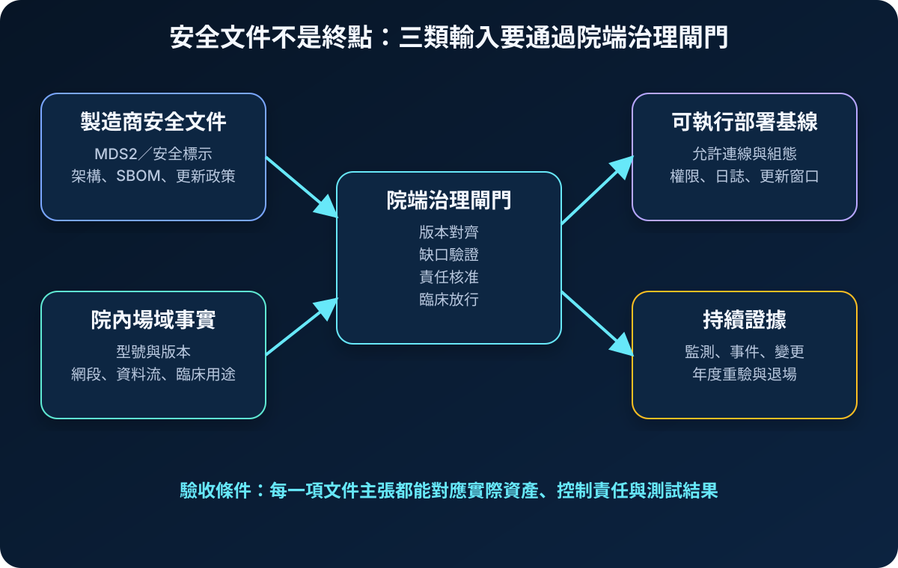
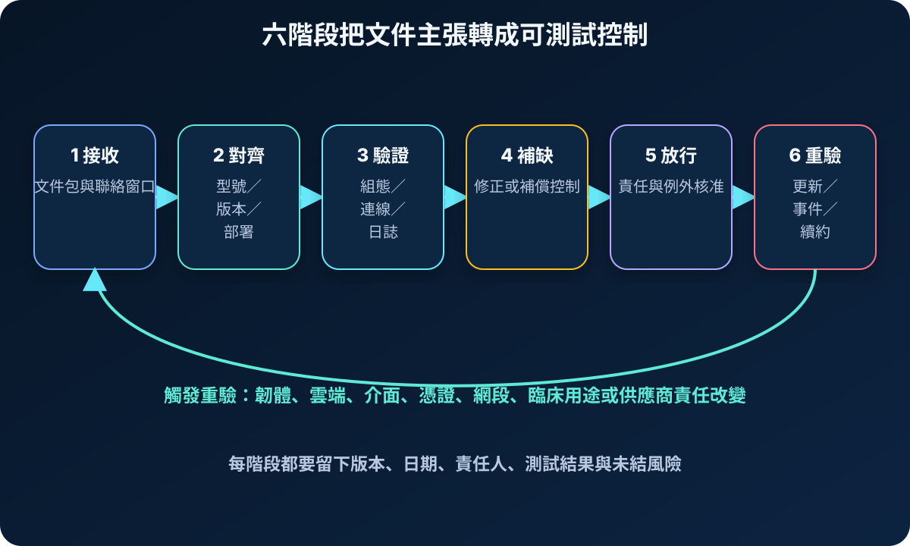
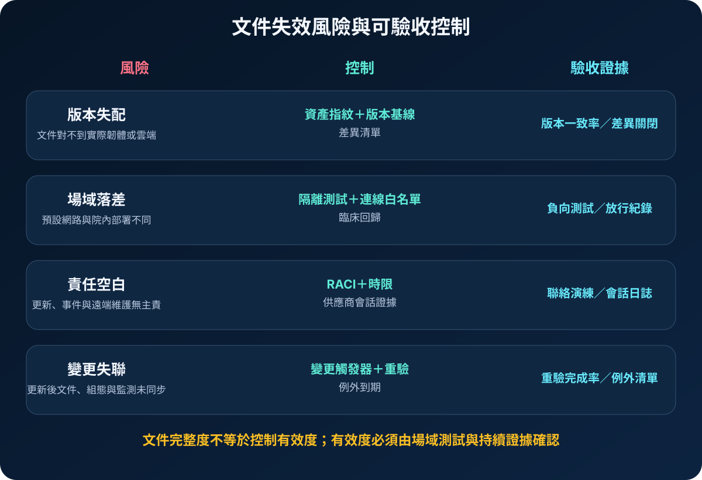

醫療資安國際觀察 · 2026-11-17
醫療設備安全文件如何變成部署基線：從 MDS2 到組態驗收
作者：Dr. William｜醫療資訊與資安治理實務工作者
醫療設備安全問卷、標示與技術文件只能說明產品宣稱；院內風險是否受控，仍取決於文件能否對上實際型號、版本、網路、權限、資料流與臨床用途，並形成可監測、可更新的部署基線。
名詞解釋：MDS2 與部署基線
MDS2 是醫療設備安全資訊揭露表，用結構化問題描述存取控制、稽核、加密、更新、惡意程式防護與資料處理能力；它屬於供應商資訊交換工具，不是安全認證。部署基線則是院方核准的實際版本、連線、組態、權限、日誌、更新窗口、補償控制與例外清單，應能直接支援監控、事件應變與變更管理。
國際現況與適用邊界
美國 FDA 於 2026 年 2 月發布醫療設備資安最終指引，要求安全標示提供足以支援風險管理的資訊，包含安全組態、更新程序、日誌與支援資訊。NIST 於 2026 年 6 月發布 IR 8618，提出以網路安全風險管理與品質系統活動追蹤醫療設備全生命週期。ENISA 於 2026 年 7 月發布醫療採購資安指引，將安全需求、評選、契約、驗收、監控與退場串成採購週期。這些資料分別屬美國產品監管與歐盟政策建議，不直接構成台灣醫療機構的法定義務。
台灣適用原則：可將國際文件轉成院內索取項目、部署驗收與變更重驗條件；產品許可、個資處理、採購契約、臨床放行及事件通報仍須依台灣法規、主管機關要求與院內程序確認。
規劃：先定義文件包、責任與驗收指標
文件包可包含 MDS2 或同等安全問卷、安全標示、架構與資料流、SBOM、預設帳號與連線、加密及憑證、日誌格式、更新與回退、漏洞揭露、支援期限及事件聯絡窗口。醫工負責設備與臨床情境，資訊與資安負責網路、身分、日誌與監控，採購與法務處理契約及退場，供應商對文件版本與產品能力負責。指標可採文件與實機版本一致率、主張驗證覆蓋率、高風險差距關閉率、更新後重驗完成率及逾期例外件數。
實作：六階段形成持續重驗閉環
- 接收：取得具日期、版本、型號與聯絡窗口的文件包。
- 對齊：比對院內資產、韌體、雲端依賴、網路與臨床用途。
- 驗證：在隔離環境測試預設值、權限、連線、日誌、更新、回退與降級。
- 補缺：要求修正，或以分區、代理、監測、限時權限等補償控制處理。
- 放行：保存基線、測試結果、責任矩陣、例外期限與臨床核准。
- 重驗：韌體、雲端、介面、憑證、網段、用途或責任改變時重新驗收。

風險：文件完整仍可能控制失效
常見失敗包括文件對不到實際韌體、供應商預設網路與院內分區不同、標示未說明遠端維護責任、更新後組態與日誌改變，以及問卷多年未更新。控制重點是版本指紋、差異清單、負向測試、責任時限、變更觸發器與例外到期；無法取得足夠資料時，應限制連線與權限、強化監測，並訂定替換或退場條件。

可執行清單
- 安全文件是否標示型號、軟體、韌體、雲端服務、日期與適用範圍？
- MDS2 或同等問卷的每項主張，是否能對應實機設定或測試結果？
- 預設帳號、服務、連線、憑證、日誌與遠端維護是否已納入部署基線？
- 文件與院內場域的差異是否具修正、補償控制、責任人與期限？
- 更新、回退、斷線、權限撤銷與臨床降級是否完成驗證？
- 變更管理是否會同步更新文件、資產、監控規則與風險接受紀錄？
來源
- U.S. FDA｜Cybersecurity in Medical Devices: Quality Management System Considerations and Content of Premarket Submissions（最終指引：2026-02；頁面更新：2026-11-11；查閱：2026-11-17）
- NIST｜IR 8618: Cybersecurity Considerations for Medical Device Manufacturers（發布：2026-06；查閱：2026-11-17）
- ENISA｜Procurement Guidelines for Cybersecurity in Hospitals and Healthcare（發布：2026-07-22；查閱：2026-11-17）
內容說明
本文依健康台灣深耕計畫相關治理內容整理，並參考 FDA、NIST 與 ENISA 官方資料，說明醫療設備安全文件、院內部署基線、場域驗證與變更重驗；不把外國監管或政策建議視為台灣法定義務，也不取代主管機關規範、產品風險評估、臨床判斷、採購契約或法律意見。